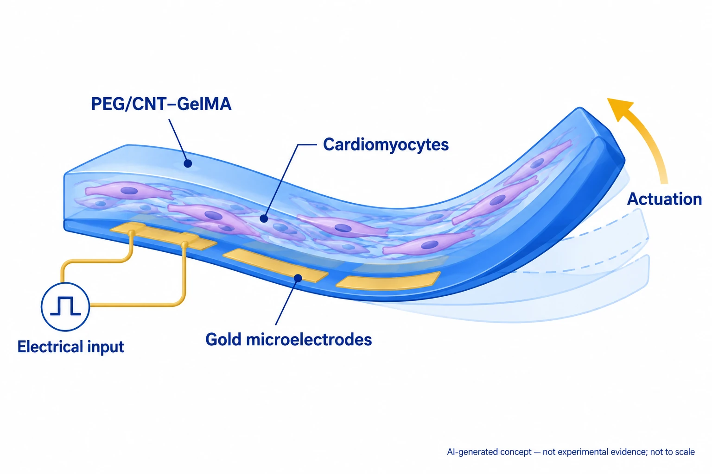

Research context and placement
Electrode–gel–biological actuator assembly supports functional integration, but the narrow BCCI interconnect–chip junction is not directly established.
Boundary case: assigned to the closest interface for navigation. Read the rationale and cross-links together; the primary theme does not delimit the study. Placement of foundational work does not establish direct bioelectronic application.
Research overview and key contributions
PEG/CNT–GelMA layers and gold microelectrodes form a cardiomyocyte-driven ray-like robot.
Microelectrodes combine mechanical support with local electrical stimulation.

AI-generated, not-to-scale concept based on public abstracts: electrically driven actuation combining a PEG/CNT–GelMA soft structure, cardiomyocytes and gold microelectrodes. Not experimental evidence. The input symbol and faint deformation outlines denote functions; they do not reproduce actual robot geometry, layer structure, a stimulation waveform or measured contraction results.
Bounded to the components and roles supported by the checked public abstracts. Actual joints, layer structure, material ratios, cell arrangement, electrical stimulation settings, deformation magnitude, contraction efficiency, lifetime, swimming speed and trajectories are neither reconstructed nor validated. The article body and supplements were not newly checked.
This is not a reproduced paper figure and does not establish permission to reuse the original figure.
Generated in ChatGPT on the web from concepts within the stated public-evidence scope and independently reviewed as a concept. This is not verification of the complete article body or supplementary information. Only display WebP encoding was applied, without cropping, resizing or content editing.
Open challenges
Editorial question: how stable are electrode–gel interfaces during repeated contraction and extended culture?
Comparison context
Match cell maturity, body geometry, stimulation location/frequency and fluid conditions.
Related external research
Phototactic guidance of a tissue-engineered soft-robotic ray
DOI: 10.1126/science.aaf4292 ↗
The cardiomyocyte–gold-skeleton ray uses optogenetic steering, contrasting with local electrode stimulation.
PubMed abstract read. Optical versus electrical stimulation, body structure and muscle pattern differ; speed alone cannot rank designs.
Abstract checkedCorresponding-author verification
Jungmok Seo: not a corresponding authorThis record concerns Jungmok Seo’s correspondence designation. Author order or an asterisk alone is not treated as confirmation; this check is separate from verification of the research content.
- Correspondence evidence source ↗
S.R. Shin and A. Khademhosseini contributed equally as corresponding authors.
Author information / author notes / corresponding authors · publisher_or_PMC_article
- Main-text review scope
- The existing commentary is based on the following review: Direct Wiley abstract and Crossref-registered abstract checked; body and supplements unread. Reading figure and correspondence information in this pass does not establish completion of a full in-depth article review.
- Pending verification
- Verify joints, stimulation settings, lifetime and supplementary videos in school Chrome. The existing commentary is based on the following review: Direct Wiley abstract and Crossref-registered abstract checked; body and supplements unread. Reading figure and correspondence information in this pass does not establish completion of a full in-depth article review.
COVERAGE & OUTREACH
Coverage and outreach
Links are checked for their relationship to this paper. Media publication does not establish independent reporting or additional experimental validation.
Soft Robots: Electrically Driven Microengineered Bioinspired Soft Robots (Adv. Mater. 10/2018) ↗
The frontispiece names article 1704189 and the matching authors and cardiac-cell/hydrogel/electrode soft robot.
Body read Read the title, authors, first-publication date and caption. It is separate from research DOI 10.1002/adma.201704189.
Sources and verification scope
Direct Wiley abstract and Crossref-registered abstract checked; body and supplements unread.
- Public publication baseline ↗ · #44 · 2026-10-03
- Crossref metadata ↗: Only public bibliographic metadata registered with Crossref was checked. This does not mean that the publisher page, abstract, or full text was read; full-text verification in the school Chrome session remains pending. license_urls lists registered links and does not establish permission to redistribute text or figures. It may include TDM or posting-policy links.
- Publisher article landing page ↗
public_publisher_abstract · Abstract; read 2026-10-03; body and supplements not audited - Crossref record supplied by publisher ↗
publisher_registered_abstract_via_Crossref · message.abstract; read 2026-10-03; not direct publisher full text